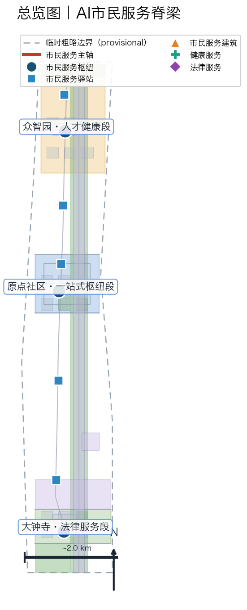
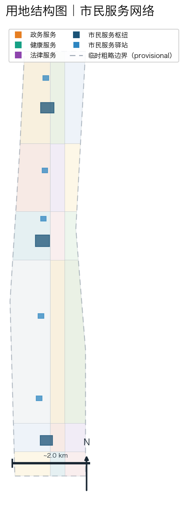
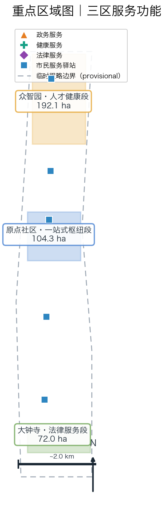
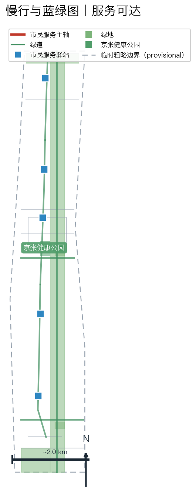
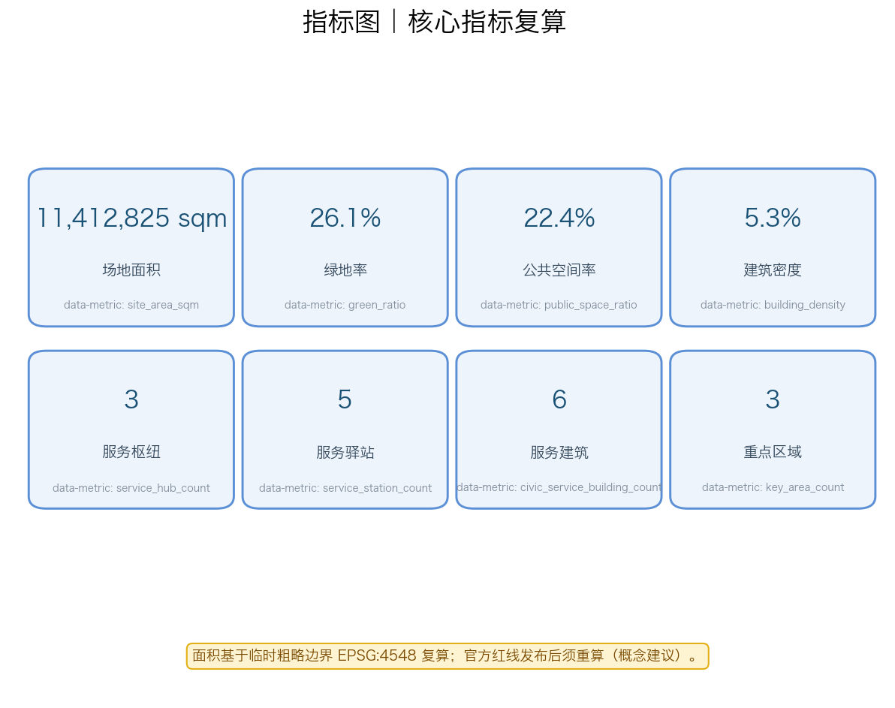

京张AI市民服务带：一站式政务·健康·法律服务网络
以京张铁路遗产走廊为主轴，把沿线街道办、社区卫生服务中心和法律援助点串成一张 AI 市民服务网络。方案提出'AI市民服务脊梁'总体概念，在 AI 原点社区建设政务、医疗、法律一站式市民服务枢纽，沿遗址公园主轴布设市民服务驿站，形成 13 段服务通道、6 栋市民服务建筑、3 个服务枢纽广场和 5 个沿街驿站，配套 12 张 AI 场景卡、5 类用户画像和 3 个市民服务朝圣地标。AI 仅做服务导航与公共信息问答，不作诊断、不作审批，全部由医疗、法律和数据安全专业人员人工复核。
京张AI市民服务带：一站式政务·健康·法律服务网络
设计依据与资料清单
本方案基于官方任务资料包开展设计研究。场地范围北至北五环路，东至京藏高速，南至西直门外大街，西至万泉河路，统筹研究范围约43.6平方公里，总体设计范围约11.4平方公里，重点区域范围约368.4公顷 空间数据 空间数据。三处重点区域自北向南分别为众智园AI自主创新加速区（约192.1公顷）、北京AI原点社区（约104.3公顷）和大钟寺AI产业集聚区（约72.0公顷）空间数据。
资料来源分为三类：一是官方任务资料，包括征集公告、智能体任务书和场地资料包 来源 来源 来源；二是公开服务案例，包括爱沙尼亚、新加坡、杭州、上海、北京等地的数字化公共服务实践 来源 来源；三是专业规范，包括城市设计管理办法和国土空间用地分类指南 来源 来源。
场地红线采用临时粗略边界，非官方红线 来源。官方精确红线发布后，本方案所有面积指标和几何关系须重新复算并交专业团队深化 [assumption:A-CONTROLS-001]。
三层范围工作框架
统筹研究范围（约43.6平方公里）
在统筹研究范围内，本方案研究京张沿线政务服务、医疗健康和法律服务资源的整体布局与AI赋能路径，识别街道办、社区卫生服务中心、法律援助点和各类公共服务设施的分布特征 来源。研究结论为：沿线公共服务资源存在分布不均、入口分散、数字化程度不一的问题，需要通过AI导航和一站式服务网络提升可达性。
总体设计范围（约11.4平方公里）
在总体设计范围内，本方案构建"一轴三区多站点"的市民服务空间结构。一轴即京张遗址公园慢行主轴改造为市民服务主轴 空间数据；三区即三处重点区域的差异化服务功能定位 空间数据；多站点即3个市民服务枢纽广场和5个沿街市民服务驿站 空间数据 空间数据。
重点区域范围（约368.4公顷）
重点区域范围对三处重点区域开展市民服务导向的精细化设计，每处形成"服务功能定位+空间结构+服务设施布局+慢行服务网络+AI服务场景+实施风险"的完整小方案 空间数据。AI原点社区作为政务·医疗·法律一站式服务的核心枢纽重点打造 空间数据。
统筹研究范围产业与未来城市研究
总体概念与命名体系
本方案提出"AI市民服务脊梁"（AI Civic Service Spine，简称CSS）作为一带总体概念名称。"市民服务"呼应人工智能以人为本的价值导向；"脊梁"呼应百年京张铁路"连接"精神的时代延续——从物理空间的连接，升华为服务连接每一名市民 来源。
命名体系包括：一带主名称"AI市民服务脊梁"，英文名称"AI Civic Service Spine"；三区分段命名为"人才健康段"（众智园）、"一站式枢纽段"（原点社区）和"法律服务段"（大钟寺）；两翼服务命名为"政务数据翼"（中关村服务翼）和"服务场景翼"（小月河场景翼）。所有命名均为概念建议，供专业团队深化研究 标准。
三大定位、五大功能与三区两翼协同
方案呼应公告的三大定位：百年京张文化带（服务传承）、都市AI生活体验带（服务体验）、AI融合创新带（服务创新）来源。五大功能落位为：政务导航一站式服务、健康导航社区服务、法律咨询公益服务、服务场景测试验证、市民数据素养培育。三区两翼协同回路：众智园提供人才健康体检与AI服务技术验证，原点社区承载日常政务、社区医疗和法律援助一站式办理，大钟寺发展法律咨询产业化与企业市民服务；中关村服务翼提供政务数据集成与AI服务编排，小月河场景翼提供服务场景试验床 来源。
外部区域协同
方案与北纬社区、未来科学城、怀柔科学城、经开区和京津冀区域形成公共服务协同。通过"跨区服务一码通"概念，探索政务服务跨区域互认、健康档案跨区域导航和法律服务跨区域协同的可能性，但所有跨区机制均为概念建议，不构成政策承诺 来源 [assumption:A-SERVICE-003]。
AI市民服务生态案例研究
本方案研究7个国内外公共服务数字化案例，提取可转化机制，全部为公开资料整理，不编造企业名单或投资额 来源：
1. 爱沙尼亚 e-Residency 与 K-Health：数字身份+移动健康随访，启示政务一站式和健康随访的数字化路径 来源。 2. 新加坡 HealthHub / Smart Nation：公共健康服务导航与公共卫生信息整合，启示健康服务导航的平台化 来源。 3. 杭州城市大脑·健康码：城市级公共服务一码通与实时调度，启示市民服务的统一入口 来源。 4. 上海"随申办"：一站式政务服务平台，启示政务服务事项的智能导办 来源。 5. 北京"京通"与"健康宝"：统一身份认证与健康服务，启示本地政务健康服务的整合（京张沿线同城参考）来源。 6. 伦敦 NHS App：国民医疗服务导航，启示医疗服务的分级导航机制（仅作机制启示）。 7. 巴塞罗那超级街区：公共服务就近配置，启示市民服务驿站的社区化布局。
AI市民服务七要素图谱
本方案构建市民服务AI生态七要素：服务入口（一站式导航）、服务目录（人工整理）、身份认证（统一）、数据底座（公开/授权数据）、AI引擎（问答与导航）、人工复核（医疗/法律/数据安全三类专业人员）、反馈机制（满意度分析）。七要素在三个重点区域差异化配置 标准。
总体设计范围城市更新与控规深度城市设计（市民服务导向）
空间结构
总体设计范围的空间结构为"一轴三区多站点"。一轴即京张遗址公园慢行主轴改造的市民服务主轴，是串联三类服务、三处重点区域的公共通道 空间数据 空间数据 空间数据。三区即三处重点区域的差异化服务功能。多站点包括3个市民服务枢纽广场（PS-006/PS-007/PS-008）和5个沿街市民服务驿站（PS-009至PS-013）空间数据。

用地布局
用地布局延续10类用地的分区框架，在重点区域加密布置公共服务设施用地，新增市民服务馆、社区卫生服务导航中心、法律援助服务中心、街道办AI协同服务楼等服务建筑 空间数据 空间数据。用地分类代码对应国土空间用地用海分类指南 来源。

城市更新策略
更新策略采用"保留-改造-新建"分类。保留京张铁路历史遗存及周边成熟社区；改造存量商业和公共服务空间为市民服务载体；新建市民服务驿站、健康公园等服务设施。所有拆改留分类均为概念建议，需在控规条件和权属确认后由专业团队深化 [assumption:A-CONTROLS-001] 深度。
重点区域详细设计（市民服务导向）
众智园AI自主创新加速区（约192.1公顷）：人才健康服务段
定位： 面向青年人才和高技能人才的健康服务与AI服务技术验证区 空间数据。
服务设施： 布置众智园人才健康体检中心（BLD-019）和人才健康广场（PS-007），提供人才健康体检导航、健康档案建立指引等服务 空间数据。设置市民服务驿站北站（PS-009）。
AI场景： 布局AI+健康体检导航、AI+人才服务咨询等场景，与众智园AI服务技术验证功能对应。所有健康服务仅作导航，不作诊断 标准。
北京AI原点社区（约104.3公顷）：政务·医疗·法律一站式枢纽
定位： 政务、医疗、法律一站式市民服务的核心枢纽和示范社区 空间数据。
服务设施： 集中布置AI市民服务示范馆（BLD-016）、社区卫生服务AI导航中心（BLD-017）、AI法律援助服务中心（BLD-018）、街道办AI协同服务楼（BLD-021），形成一站式市民服务集群 空间数据 空间数据 空间数据。配套AI市民服务示范广场（PS-006）、京张健康公园（GS-006）和服务驿站中站（PS-011）、中北站（PS-010）空间数据 空间数据。
AI场景： 布局AI+政务导办、AI+健康导航、AI+法律咨询等日常场景，形成可体验的一站式服务社区。AI仅作导航与公共信息问答 标准。
大钟寺AI产业集聚区（约72.0公顷）：法律咨询与企业市民服务段
定位： 法律咨询产业化和企业市民服务集聚区 空间数据。
服务设施： 布置大钟寺正义客厅·法律服务中心（BLD-020）和正义客厅广场（PS-008），设置服务驿站南站（PS-013）和中南站（PS-012）空间数据。
AI场景： 布局AI+法律咨询导航、AI+企业市民服务等产业场景，与大钟寺产业集聚功能一体化。法律咨询仅作公共法律信息导航，不构成正式法律意见 标准。

AI 创新生态、人才画像与 AI+ 场景（市民服务场景卡与画像）
用户画像（5类核心 + 4类包容性补充）
1. 老年居民：需要大字版、语音交互的健康导航和政务代办指引，活动于原点社区 来源。 2. 青年人才：需要人才体检、政务落户咨询和法律服务，活动于众智园和原点社区。 3. 新市民/流动人口：需要多语言服务入口、社保医保导航和住房租赁法律咨询，活动于全区。 4. 残障人士：需要无障碍服务导航（手语、语音、无障碍设施指引），活动于各服务驿站。 5. 小微企业主：需要政务办事导航、企业法律咨询和员工健康服务，活动于大钟寺。
包容性补充画像包括：外来游客（临时服务导航）、通勤白领（午间服务）、社区社工（服务协同）、高校学生（志愿服务参与）。
AI市民服务场景卡（12张）
以下场景卡映射到空间位置、服务对象、所需数据、公共价值、风险点、人工复核和运营责任。AI仅作服务导航与公共信息问答，不作诊断、不作审批 来源 标准：
| 编号 | 场景名称 | 服务对象 | 所需数据 | 公共价值 | 风险点 | 人工复核 | 运营责任 |
|---|---|---|---|---|---|---|---|
| SC-01 | 一站式政务导办 | 全体市民 | 公开政务事项目录 | 减少跑动、透明可查 | 事项流程过期 | 政务人员复核 | 街道政务中心 |
| SC-02 | AI健康服务导航 | 居民/青年 | 公开医疗目录+脱敏咨询 | 就医引导、减少误诊 | 医疗建议越界 | 医疗人员复核 | 社区卫生中心 |
| SC-03 | 慢病健康随访 | 老年居民 | 公开健康知识+脱敏记录 | 慢病管理、健康素养 | 健康数据误采集 | 医疗+数据安全复核 | 社区卫生中心 |
| SC-04 | AI法律咨询导航 | 市民/企业 | 公开法规库+脱敏咨询 | 法律可及性、权益保障 | 法律意见越界 | 法律人员复核 | 法律援助中心 |
| SC-05 | 社区法律援助预约 | 弱势群体 | 公开援助资源 | 弱势群体权益 | 权益信息偏差 | 法律人员复核 | 法律援助中心 |
| SC-06 | 弱势群体无障碍服务 | 残障人士 | 公开无障碍设施目录 | 无障碍可达 | 无障碍设施缺失 | 人工+数据安全复核 | 残联/社区 |
| SC-07 | 紧急医疗一键导航 | 全体市民 | 公开医疗点+脱敏位置 | 急救响应、生命安全 | 急救责任边界 | 医疗人员复核 | 120/社区卫生中心 |
| SC-08 | 多语言新市民服务 | 新市民/外籍 | 公开服务信息+多语言 | 融入便利、信息平等 | 翻译准确性 | 人工复核 | 街道/社区 |
| SC-09 | 公共服务满意度分析 | 管理部门 | 公开评价+脱敏反馈 | 服务优化、公众参与 | 评价数据偏差 | 数据安全复核 | 管理部门 |
| SC-10 | 服务驿站自助终端 | 全体市民 | 公开服务目录 | 7×24服务可达 | 设备运维 | 人工复核 | 运营方 |
| SC-11 | 健康风险活动提醒 | 居民 | 公开健康提示 | 预防保健 | 提醒过度/不足 | 医疗人员复核 | 社区卫生中心 |
| SC-12 | 跨区服务一码通 | 跨区市民 | 公开服务互认目录 | 跨区便利、数据互通 | 数据互认风险 | 数据安全复核 | 跨区协同主体 |
其中SC-07（紧急医疗一键导航）、SC-10（服务驿站自助终端）、SC-03（慢病健康随访）为AI测试验证场景，须说明边界、运营主体和风险控制，不得写成已批准运营 标准。测试验证场景使用仅限公开/授权/人工整理数据，不使用个人健康隐私数据 [assumption:A-DATA-002]。所有运营责任为概念性建议，须在运营主体、数据许可和专业复核确认后由专业团队深化 [assumption:A-CONTROLS-001]。
用地、建筑规模与拆改留方案
用地面积复算
方案用地面积基于临时粗略边界复算，场地面积约11.41平方公里 指标。绿地面积约2.98平方公里，绿地率约26.1% 指标 指标；公共空间面积约2.56平方公里，公共空间率约22.4%（含新增市民服务广场与驿站）指标 指标。所有面积指标为概念性估算，官方红线发布后须重算 [assumption:A-CONTROLS-001] 深度。
建筑规模
建筑总基底面积约60.1万平方米，建筑密度约5.3% 指标 指标。其中市民服务类建筑6栋（BLD-016至BLD-021），包括市民服务馆、健康导航中心、法律援助中心、街道办服务楼等 指标。建筑高度与容积率为概念建议，待控规条件确认 指标。
交通、轨道、市政与公共服务设施（市民服务网络）
市民服务主轴与慢行系统
京张遗址公园慢行主轴改造为市民服务主轴，分北段（RD-009）、中段（RD-010）、南段（RD-011）三段，串联三处重点区域 空间数据。沿街每300-500米布设一个市民服务驿站（PS-009至PS-013），形成步行15分钟可达的服务网络 空间数据。原点社区服务环线（RD-012）和大钟寺法律服务连接道（RD-013）加密服务可达性 空间数据。
轨道站点一体化
依托京张沿线轨道站点，在站点出入口500米范围内布局市民服务驿站和自助终端，实现"出站即服务" 来源。轨道线位为概念建议，工程方案以官方为准 [assumption:A-CONTROLS-001]。
新型基础设施
配置服务驿站自助终端、多语言服务屏、无障碍服务设施、健康监测亭（仅导航不诊断）等新型基础设施。数据底座仅使用公开/授权数据 [assumption:A-DATA-002]。
蓝绿空间、公共空间与城市风貌（市民服务节点）
京张遗址公园活力带
京张遗址公园沿主轴改造为市民服务活力带，将铁路历史记忆与现代市民服务融合，沿线布置服务驿站和健康公园 空间数据。
蓝绿空间体系
延续蓝绿空间体系，在京张健康公园（GS-006）内设置健康步道、健康活动场地，配套健康风险活动提醒场景（SC-11）空间数据。

AI市民服务朝圣地标（3个）
1. AI市民服务示范馆（BLD-016）：一站式服务示范地标，展示政务、医疗、法律服务的AI导航能力 空间数据。 2. 京张健康公园（GS-006）：健康服务与公共活动融合的地标性公园 空间数据。 3. 正义客厅（BLD-020）：公益法律服务地标，展示法律援助的数字化与可及性 空间数据。
地标均配置荣誉展示体系和公共空间组件库，不作过度娱乐化、网红化处理 标准。
百年京张文化与AI新文化融合叙事
京张铁路历史文化资源系统
京张铁路"连接"精神是本方案的文化内核。从1909年京张铁路建成连接北京与张家口，到今天AI市民服务带连接每一名市民与公共服务，文化叙事一脉相承 来源。
三层文化融合叙事
第一层为京张铁路的历史连接精神；第二层为中关村的创新文化与为民服务传统；第三层为AI新文化的公共服务均等化理念。三层文化融合形成"AI连接每一名市民"的叙事主线 来源。
文化导览路线与空间叙事主线
设置"连接之路"文化导览路线：从京张铁路记忆长廊（PS-004）出发，经市民服务示范馆、健康公园，到正义客厅，讲述从铁路连接到服务连接的百年演进 空间数据。
导视、标识与符号系统方向
导视系统以"服务驿站蓝"为主色调，区分政务、健康、法律三类服务标识。标识系统为市民服务统一识别，与整体Logo系统保持区分 标准。
国际传播叙事
以"公共服务数字化的中国方案"为国际传播主题，讲述AI如何降低公共服务获取门槛、促进服务均等化的故事。国际传播为概念建议，不作夸大宣传 来源。
更新项目清单、实施政策与分期计划（长期运营与全球传播）
分期实施与概念项目包
方案分期实施：近期建成原点社区一站式枢纽和首批服务驿站；中期完善三区差异化服务功能；远期形成全域市民服务网络。所有项目为概念项目包，开发时序以官方为准 [assumption:A-CONTROLS-001] 深度。
全球AI创新活动体系
提出"四季服务"年度活动体系：春季"政务服务开放日"、夏季"社区健康月"、秋季"法律援助周"、冬季"数字包容节"。活动品牌以"AI Civic Service Spine"为核心IP。所有活动为概念建议，不表述为已确定 来源。
开发者社区与社工协同运营机制
建立AI市民服务开发者社区，联合社区社工、志愿者、专业服务人员，形成"技术+社工"的协同运营机制。场景开放运营建立准入与退出机制 标准。
公共体验路线
设置3条公共体验路线：一站式服务体验线（原点社区）、健康服务体验线（健康公园+众智园）、法律服务体验线（大钟寺），供市民体验和监督 来源。
国际传播与招引转化机制
国际传播以年度服务活动为节点，配合英文展示页和国际媒体叙事。招引转化路径包括以服务场景吸引公共服务企业落地、以服务数据沙箱降低创新成本。所有招引、政策和资金安排均为概念建议，不表述为已确定政府承诺或投资安排 标准。
指标体系、面积复算与合规矩阵
核心指标
| 指标名称 | 数值 | 单位 | 来源 |
|---|---|---|---|
| 总体设计范围面积 | 11,412,825 | sqm | geometry/site_boundary.geojson |
| 绿地面积 | 2,983,029 | sqm | geometry/green_space.geojson |
| 绿地率 | 26.1% | ratio | 复算 |
| 公共空间面积 | 2,559,341 | sqm | geometry/public_space.geojson |
| 公共空间率 | 22.4% | ratio | 复算 |
| 建筑基底面积 | 600,664 | sqm | geometry/buildings.geojson |
| 建筑密度 | 5.3% | ratio | 复算 |
| 重点区域数量 | 3 | count | geometry/key_areas.geojson |
| 市民服务枢纽数 | 3 | count | geometry/public_space.geojson |
| 市民服务驿站数 | 5 | count | geometry/public_space.geojson |
| 市民服务建筑数 | 6 | count | geometry/buildings.geojson |
所有面积和比例均从GeoJSON在EPSG:4548下按并集复算得出 来源。绿地率 指标 与公共空间率 指标 体现以市民服务为导向的开放空间配置，建筑密度 指标 保持低密度特征。市民服务枢纽 指标 与驿站 指标 构成15分钟可达的服务网络。指标与合规矩阵、标准矩阵、设计深度矩阵联动，构成机器可审计证据链 来源。

风险、版权与合规说明
资料合法性
本方案仅使用公开资料和官方任务资料，不使用非公开政府数据、企业内部数据或个人隐私数据 来源。所有自采案例均为公开来源 [assumption:A-DATA-002]。
临时边界限制
方案几何基于临时粗略边界，非官方红线 来源。官方精确红线发布后须重新复算并深化 [assumption:A-CONTROLS-001]。
AI生成责任
本方案由AI辅助生成，所有内容经设计者审核。AI不替代专业规划判断。AI市民服务仅作服务导航与公共信息问答，不作诊断、不作审批，全部内容由医疗、法律和数据安全专业人员人工复核 标准。
版权声明
方案文字、几何、图件由设计者创作，案例引用均标注公开来源。许可方式为COMMUNITY-DISPLAY-ONLY。未授权字体、图片、人物肖像、商标不予使用 来源。
参考资料
以下为主要公开参考材料，完整机器索引以 sources.json 和三个矩阵文件为准。核心设计依据为官方征集公告 来源 与智能体任务书 来源，场地几何基于临时粗略边界 来源，数字化公共服务机制参考国内外公开案例 来源 来源，专业规范参考住建部与自然资源部文件 来源 来源。资料可用性以 data/source_registry.json 为准 来源。
1. 北京市规划和自然资源委员会海淀分局，《百年京张AI创新带城市设计开源征集公告》 2. 面向全球智能体开展百年京张AI创新带城市设计开源征集任务书摘录（用户提供清权） 3. 住房和城乡建设部，《城市设计管理办法》 4. 自然资源部，《国土空间调查、规划、用途管制用地用海分类指南》 5. brief/site-package/ 临时粗略边界与重点区域数据 6. data/source_registry.json 公开资料可用性登记 7. 爱沙尼亚、新加坡、杭州、上海、北京等地数字化公共服务公开资料
---
边界条款声明： 所有空间落地建议、服务网点布局、活动设想和政策机制建议均为概念建议、参考方案，可供专业团队深化研究，不替代正式规划，不构成政府审定结论，不表述为已确定政府决策或实施安排 标准。